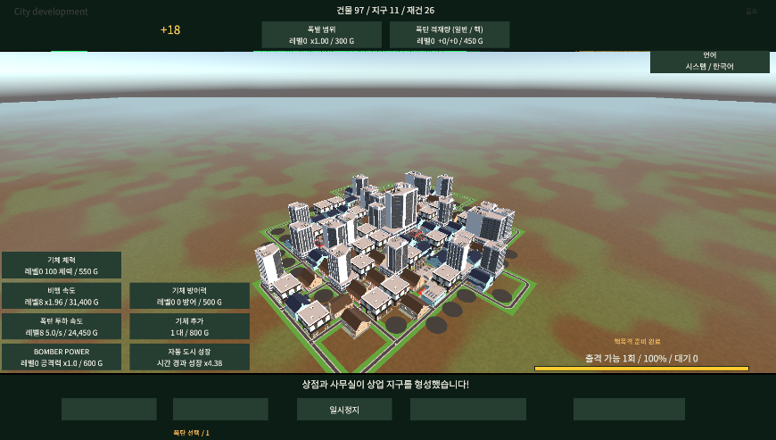

Tracefolio REPORTS & ISSUES
Tracefolio REPORTS & ISSUES언어별 버튼·스코어 누락의 씬 연결 수정
검토언어별 라벨이 배경 뒤에 그려지는 순서와 실제 Text 번역 누락을 수정하고, CJK 행 높이보다 작은 표시 영역을 넓혔습니다.
작업 결과
변경 전 오류 구조 재현·변경 후 실제 Text153개·그리기 순서·행 높이 정적 검사 통과. 화면 표시 미검증.
변경 내용
재현 조건
Unity6000.0.83f1 / URP17.0.4 / UGUI / Noto Sans CJK KR
재현 순서
사용자 실행 화면에서 버튼 라벨·발전도/골드 숫자 누락 확인. 이전 씬과 실제153개 Text·Canvas sibling순서·OTF hhea와RectTransform을 대조.
기대 동작
모든 언어의 버튼/점수/라벨이 배경 앞에서 읽히며 실제 번역된 문구를 유지.
실제 동작
변경 전 실제Text번역불일치46건·배경보다앞서그려지는라벨56개·CJK행높이보다작은Text영역6개 확인. 사용자 화면에서도 하단라벨/큰숫자누락·일부영문잔류가 관찰됨.
원인
언어별 라벨이 부모 m_Children의 배경 앞에 저장되어 뒤에 그려지는 배경에 가려지는 연결을 확인했습니다. 일부 복제Text에는카탈로그번역값대신원문이남았습니다. 스코어는폰트42/영역높이52였지만Noto hhea는1000units당상승1160·하강288로42px의행높이가약60.8px입니다. Truncate설정으로잘릴수있는구성을확인했습니다. 실제 엔진 렌더 인과 검증은 미실행입니다.
적용 내용
정적153개 Text의9언어문구를 실제오브젝트에저장. 언어라벨이배경보다나중에그려져화면앞에표시되도록씬sibling목록정렬. 큰숫자영역높이52→72,나머지부족한Text영역도폰트기준여유확보. 발전도숫자색을밝게하고하단주요버튼글자17→24. 폰트·색·문구·배치는씬에저장했으며 런타임UI생성·스타일/폰트대입은없습니다. 파란 특수 건물·파괴 연출 · 9언어 문서
검증
QA/VisualFeedback/before.unity와수정씬비교로번역불일치46→0·배경뒤라벨56→0·행높이부족6→0. 실제Text내용과순서를기존Localization검사에연결해이전의카탈로그검사만으로통과하던누락을보완했습니다. 동적531종·nativeText178개글리프매핑누락0. 씬1193객체·2675로컬참조·528외부참조·14이벤트와부모/자식상호연결통과. 외부원본5840개해시변경0. 언어/쿨타임699개assertion,Runtime/Editor참조컴파일통과. 실제표시해결완료를의미하지않습니다.
Unity6 Truncate 공식 설명

남은 사항
사용자 화면 조작 금지로 Unity/플레이어 실행·Play·씬 재열기·수정 후 캡처·실제9언어 가독성은 미검증입니다. 제공된 변경 전 화면만 원본 그대로 참고로 첨부합니다. 브라우저 렌더도 실행하지 않았습니다.
작업 시간
- 제안 시간: 15~25분
- 실제로 완료된 시간: 시작2026-11-07 03:46:01 KST. 구현·독립/참조 검사 후 공개 배포 확인 진행. 실제 Play 미실행.
- XERJ: 미사용 — XERJ 도구 미제공 — rg·실제 씬/소스/폰트 파일·독립 검사 사용